Early November is a special time in skateboarding. A time when the very best skate videos are released in the final push for Skater of the Year glory. As of right now, and for the first time in a while, it seems like it is just about anybody's year to take.
But instead of talking about that, 4Ply presents an article analyzing the logos skaters wore during the Tampa Pro Semi-Finals that happened a couple weeks ago.
We spent hours staring at the livestream of Tampa Pro 2021, eating snacks and diligently recording who wore what logos on what article of clothing. And while stolen banners and ejected IRL meme taunters may have made the headlines, we think the real story lies locked within the logos.
Methodology:
Data for 35 skaters was logged from the Tampa Pro Semi-Finals on October 17th, 2021. This consisted of the 27 men and 1 woman who qualified, plus 5 previous Tampa Pro winners who auto-qualified. The 2 “golden ticket” skaters who went straight from Qualifiers to Finals were logged for what they wore in the finals.
Want to double check our data, go right ahead.
The Shoes:
We tracked both what brands of shoes were literally on the skater's feet, as well as if a shoe sponsor was announced for the skater before their run. Occasionally we had to use context clues (who the skater’s shoe sponsor is) to identify and otherwise non-distinctive shoe. On two occasions we could not identify what brand of shoe the skater was wearing, and one skater didn’t wear shoes at all because he doesn’t have feet.
So what were the top contest skaters wearing on their feet at Tampa. Let’s take a look:
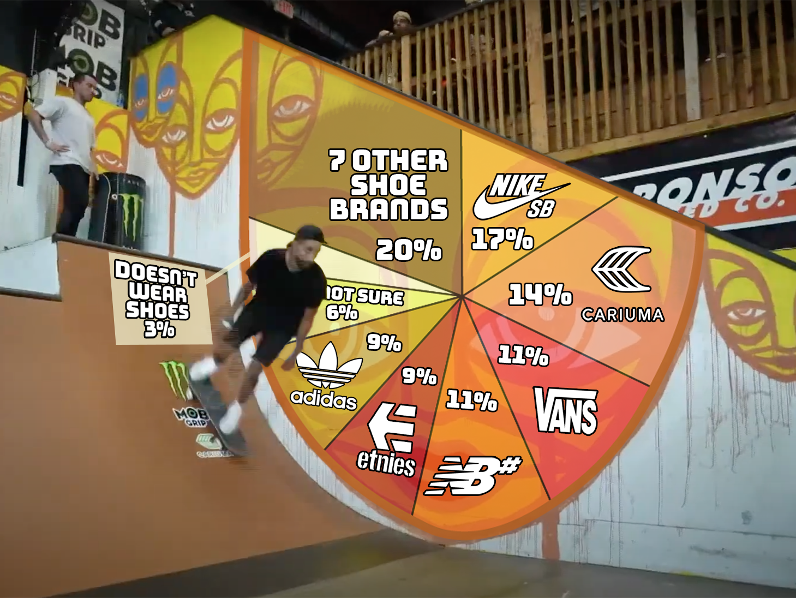
No big shock that the brand that has taken the biggest pains to be seen in the contest circuit, be it with event sponsorship or with conspicuously huge logos on the shoes themselves, is newcomer Cariuma. Though they still haven’t quite taken the top spot from Nike SB, it is quite a presence for a company that just started sponsoring skaters a couple years ago. Sadly, only one core brand made into the top five (No, publicly traded Supreme-owning VF Corp/Vans is not a core brand).
It is also worth noting that one skater rode Axions in Tampa Pro 2021. It is also worth counter-noting that the skater who wore Axions was Mickey Papa.
How about this: According to our listening skills, 20% of the skaters in the Semi-Finals did not have an official shoe sponsor. Times are tough in the shoe game.
The Shirts:
With plenty of space for artwork and graphics, the shirt is the most visible piece of on-body real estate a skater has to offer. It’s an opportunity to show your fellow skaters and those watching at home who you are and what you're into, sponsor-related or otherwise. So what did the hot shots of Tampa Pro do with this opportunity? What interests and statement did the semi-finalist make with their shirts?
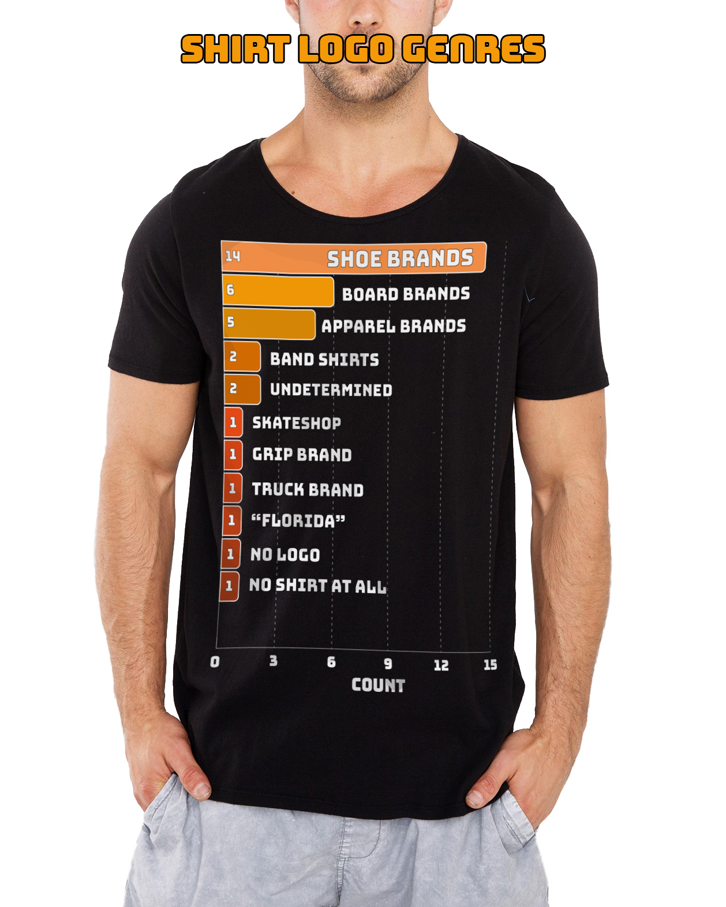
The most common statement being made by shirts was “Check out my shoe sponsor”, with 14 instances of shoe brands being repped. Of those, Nike and Cariuma had 4 shirts each and Vans had 2. There were 2 shirts where we couldn’t identify what brand was involved. And after that every shirt repped something unique.
Outside of skate shoes, apparel, skateshop, and hardgood brands, there were just 5 instances of graphic torsos not connected to a sponsor (not including those 2 we couldn’t identify).
- 2 Skaters wore band shirts: David Reyes wore a Townes Van Zandt shirt and Alex Sorgente wore a Jane’s Addiction shirt.
- JP Souza was the only skater who wore a shirt with no logo whatsoever.
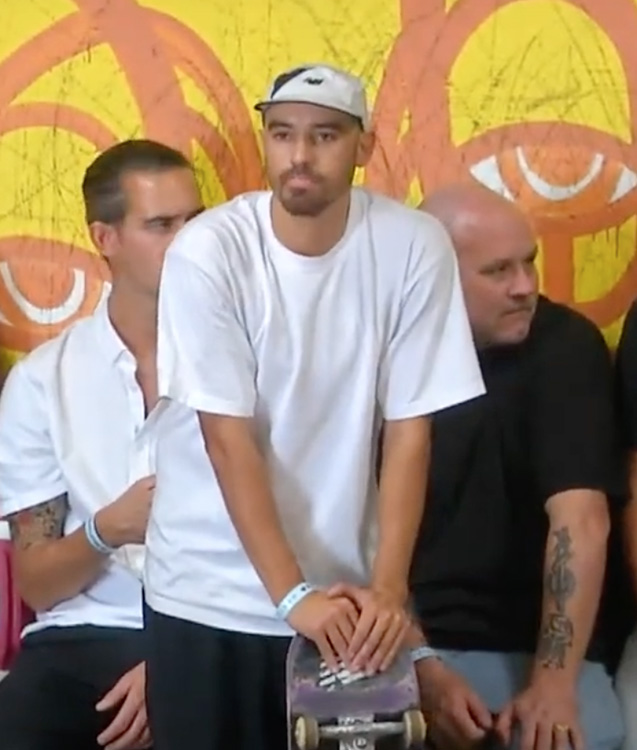
- Skategoat Leandre Sanders was the only person who didn’t wear a shirt at all.
- John Dilo wore a shirt that said “Florida”.
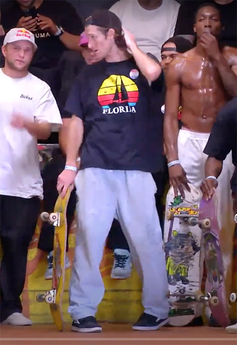
- Also of note is that 2 skaters wore shirts with collars, both with small Nike SB logos.
The Hats:
Until sponsors start insisting on temporary face tattoos (or permanent), the hat is the prominent head-vicinity real estate opportunity for logos. But before we look at the what of skater’s hats, let’s analyze the how of skater’s hats.
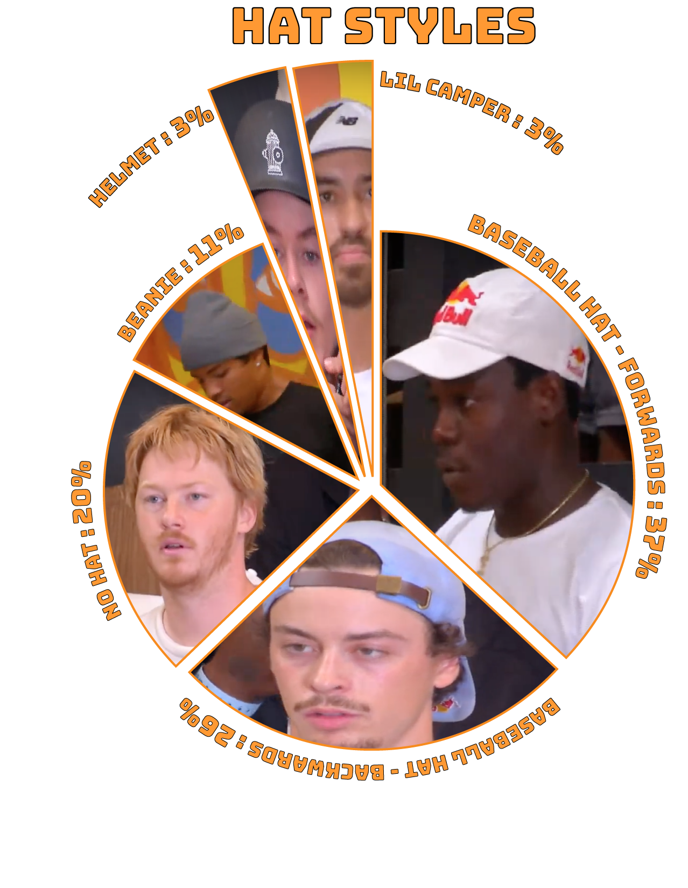
Baseball hats ruled the day, as they often do, with over 60% saturation. About 40% of those baseball hats worn were of the ‘backwards’ variety. A third of the competitors missed the incentive opportunity and didn’t wear any headwear at all. Despite the heat, 4 skaters still wore knitted beanies. Which leaves us with JP Souza wearing a lil camper-style cap and we’ll let you guess who wore a helmet during their runs......It was Andy Anderson. And at this point it would look weird if he wasn’t wearing a helmet.
Returning our focus to the hat branding, let’s take a look at what conspicuous things are happening on the domes of Tampa Pro.

Should 4PLY make this hat?
Including the 2 hats that had indeterminate branding (labelled "Dunno" above), over a third of all semi-finalists (and we‘re talking about all competitors here, not just the ones wearing hats) were sporting energy drink logos on their heads during their runs. That’s 12 skaters out of 35 repping for energy drinks with a hat.
4 skaters displayed their shoe sponsor on their head (3 Nikes and a New Balance). 3 skaters wore sports teams hats that may or may not have been co-branded with a side patch or something, and 2 people kept it real with hats from their local skate shop. The rest of them were a bunch of single-hitters for wheels, a board brand, an apparel brand, Thrasher magazine, and, of course, Andy Anderson in his helmet.
From all this data (and you can view the entire thrilling dataset here), we can make a few mostly objective evaluations for the 2021 Tampa Pro Semi Finals.
- Birdo tried to warn us; When adding footwear, shirts, and hats together, Nike SB had the most on-body logos with 13 hits. However, nearly half of these came from Pamela Rosa and Luan, who went head-to-toe with it.
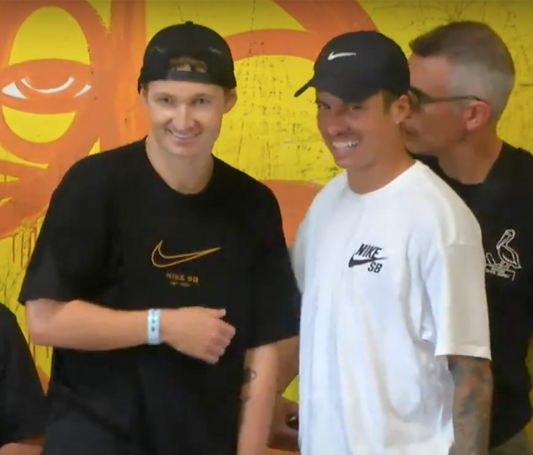
- Cariuma, by design and budget, got the most airtime of the broadcast. When one factors in the on-course banners from sponsoring the event, constant shots of Mike V in his Cariuma shirt, and how big their logo is on their shoes, it is safe to determine they undoubtedly had the most logo viewings of the broadcast, which is exactly what they paid for.
But, they may have gotten more than they bargained for.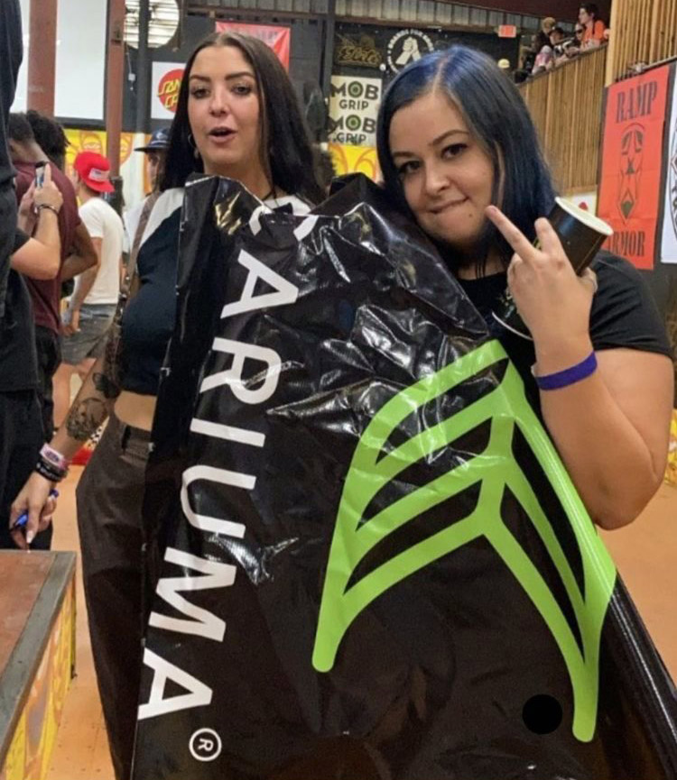
- It is interesting to note that there were zero Cariuma hats, while there was no Red Bull logos other than hats. One has to assume these boundaries are not coincidental. Side note to this note; There were 3 skaters who outfitted themselves in Cariuma and Red Bull logos simultaneously.
- With that in mind, 4Ply is comfortable declaring Jagger Eaton as the ‘sell out’ of the Semi-Finals for doing the full Cariuma shoes / Cariuma shirt / Red Bull hat combo. As we mentioned, 2 other skaters rocked the exact same logo mix, but Jagger also wore ear buds and that put him over the top. He did manage avoid distractions to get 3rd in the finals, though.

- Speaking of god damn ear buds, 4 skaters wore ear buds during their runs.
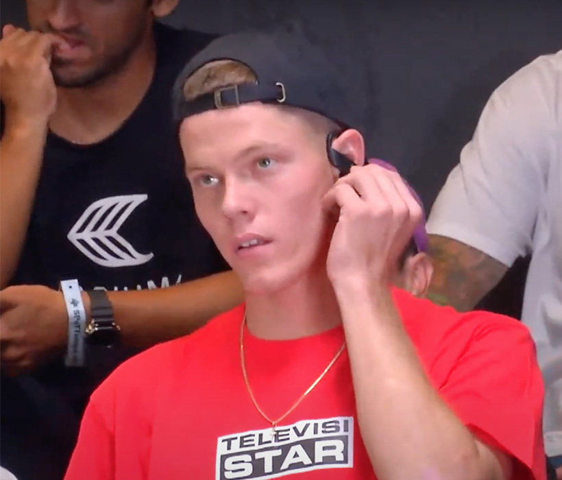
- The least ‘sell-out’ of the event might be Skategoat Landre Sanders, which just seems like a mistake to report. But, despite rocking the Cariuma shoes, he didn’t wear either a hat or a shirt. Good for him for putting comfort first.
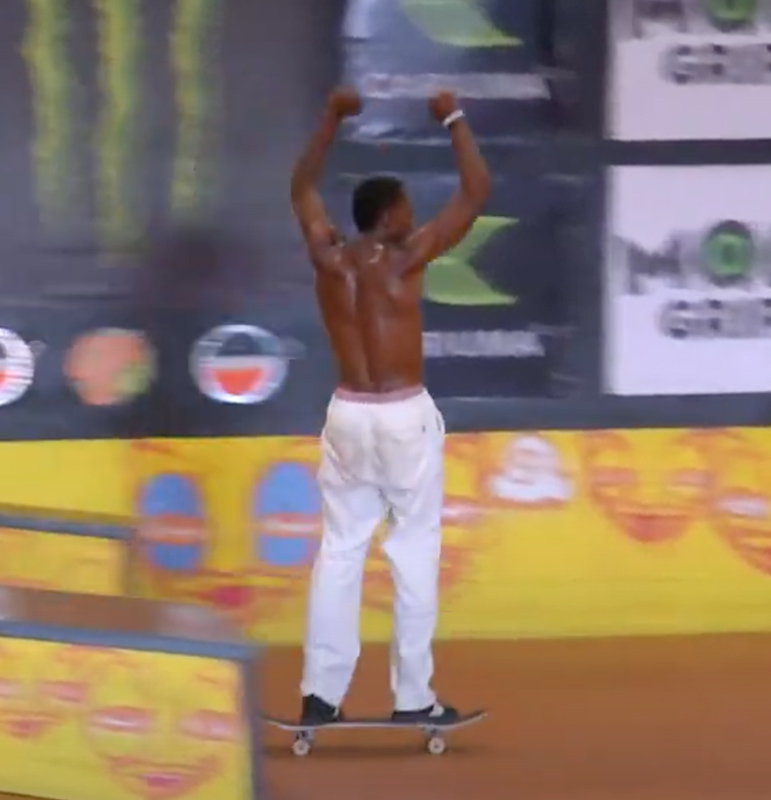
- We’re also not quite sure what brands Robert Neal was wearing, so it is hard to determine exactly how much sponsorship was a factor in his fits.
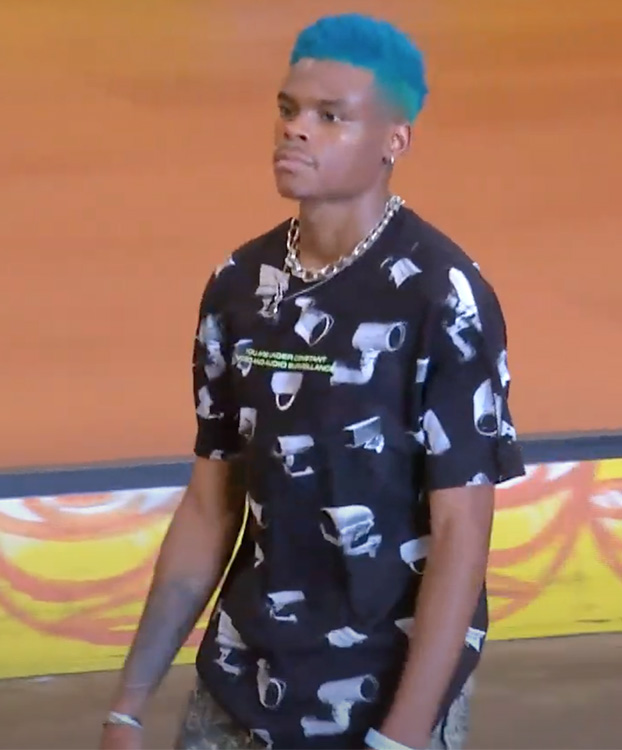
- Ultimately, 4Ply is gonna declare David Reyes the free thinker of the event. He wore a band shirt, no hat, and let a board sticker showcase a shoe sponsor that he is presently just flow for.
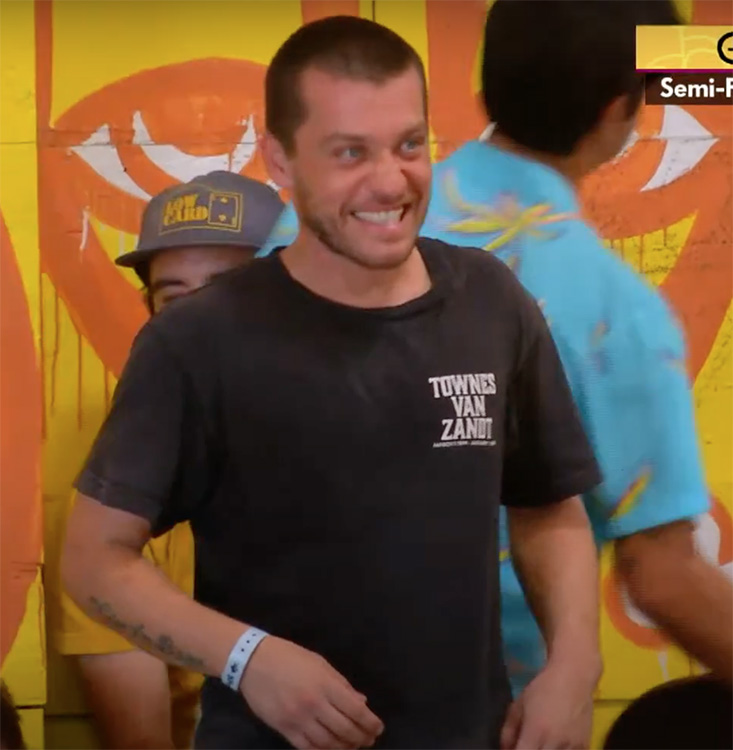
So there it is: The 2021 Tampa Pro Semi-Finals.
Oh yeah, Shane won.
For the record, the team at 4Ply would be more than happy to entertain personal sponsorship and logo placements opportunities. Hit us up through email or on Instagram: @4plymag. We suppose you could hit us up for general communincation as well.